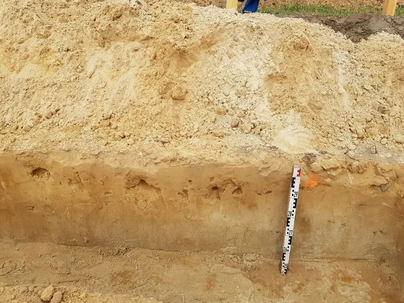
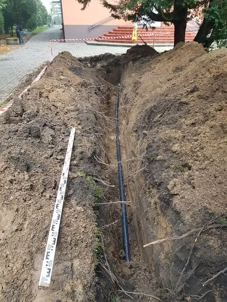
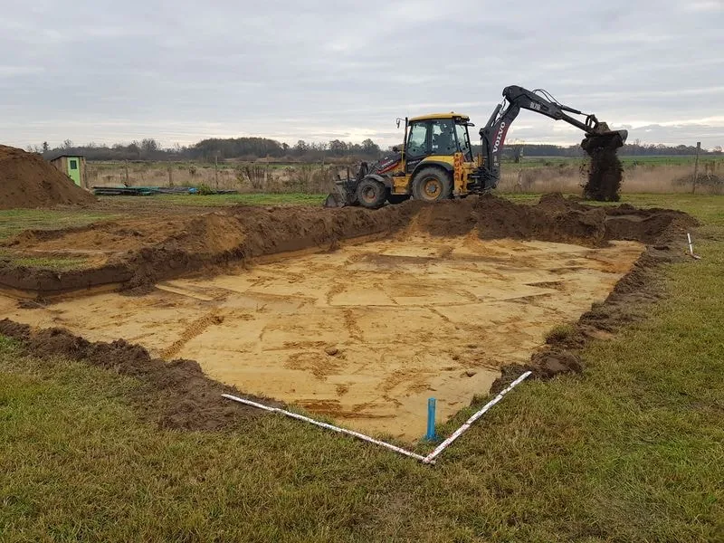
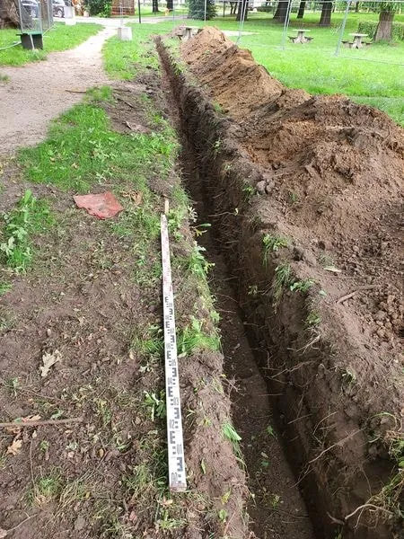
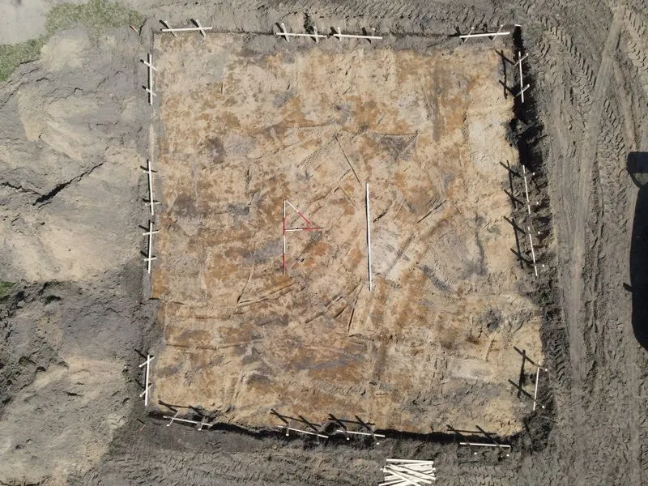
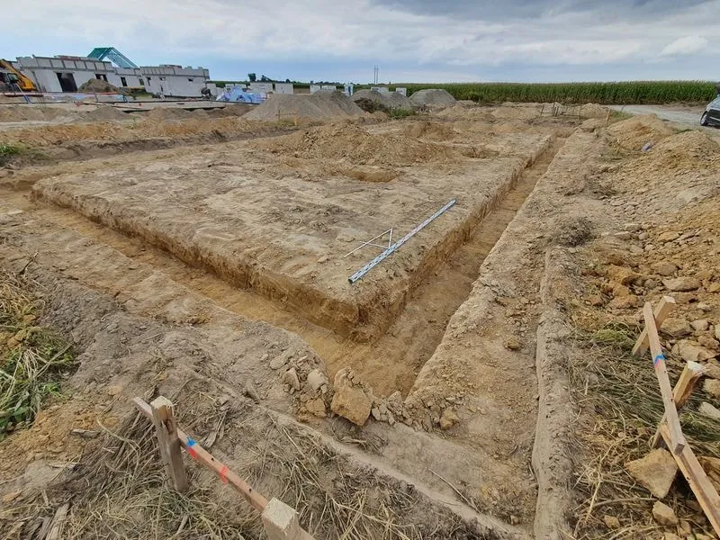
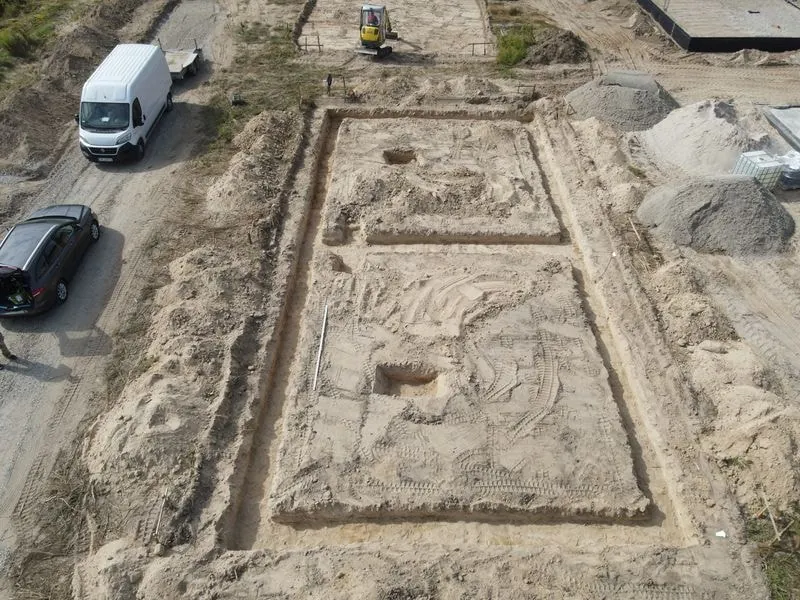
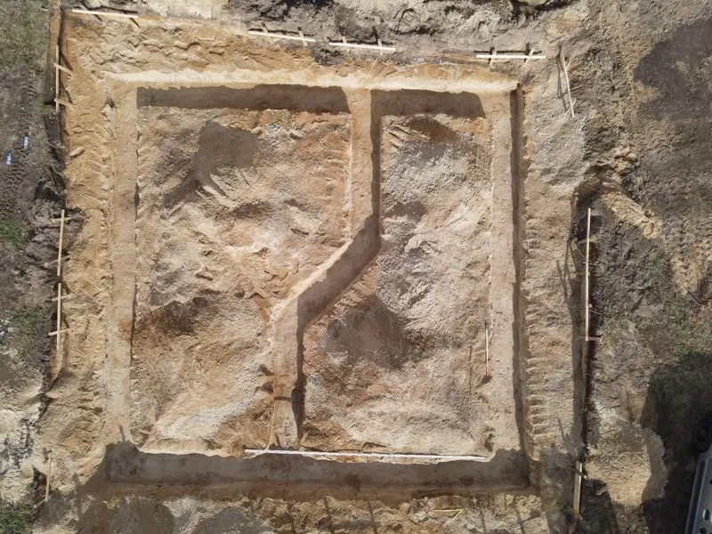

Nadzory archeologiczne
Nadzór archeologiczny jest prowadzony w trakcie prac budowlanych w miejscach, w których istnieje możliwość występowania zabytków archeologicznych. Naszym zadaniem jest nadzorowanie i dokumentacja prac, a także pilnowanie, aby żadne zabytki nie zostały zniszczone. W trakcie nadzoru prowadzi się obserwację warstw ziemi w profilu, a także w rzucie wykopu. Swoją pracę dokumentujemy w formie opisowej oraz fotograficznej. Odkryte podczas nadzoru znaleziska archeologiczne mają bardzo duży wpływ na realizację inwestycji. Ważne jest, aby były one wykonane skrupulatnie i rzetelnie.

Znaczenie nadzorów archeologicznych w inwestycjach budowlanych
Usługi archeologiczne są nieodzownym elementem każdej inwestycji budowlanej na terenach o bogatej historii. Nadzory archeologiczne pozwalają na bieżąco monitorować prace budowlane, zapewniając ochronę i dokumentację artefaktów. Dzięki temu możliwe jest zachowanie dziedzictwa kulturowego dla przyszłych pokoleń.
Archeoreplica zapewnia kompleksową obsługę nadzorów archeologicznych, dbając o każdy etap procesu inwestycyjnego. Odciążamy inwestora w całym procesie administracyjnym związanym z uzyskaniem pozwolenia konserwatorskiego, wykonujemy zarówno kwerendy archiwalne, wstępne badania powierzchniowe i sondażowe, jak i szczegółowe analizy oraz dokumentację odkryć – gwarantujemy profesjonalizm i rzetelność usług archeologicznych - Świdnica. Dzięki temu inwestorzy mogą być pewni, że ich projekty są realizowane zgodnie z obowiązującymi przepisami. Wieloletnie doświadczenie pozwala nam dopasować tryb postępowania i metodykę badań do konkretnego przypadku, dzięki czemu ograniczamy koszty inwestycji.

Usługi archeologiczne – FAQ
Jak długo trwa uzyskanie pozwolenia konserwatorskiego?
Czas oczekiwania zależy od stopnia skomplikowania sprawy oraz kompletności dostarczonej dokumentacji. Dzięki wypracowanym przez nas metodom składamy kompletny wniosek w ciągu 2-3 dni roboczych a decyzję uzyskujemy do 30 dni. W szczególnych przypadkach możliwe jest szybsze rozpatrzenie sprawy.
Czy badania archeologiczne zawsze są obowiązkowe?
Obowiązek przeprowadzenia badań wynika przede wszystkim ze specyfiki lokalizacji działki – jeśli znajduje się ona na terenie objętym ochroną prawną np. wpisanym do gminnej ewidencji zabytków, rejestru zabytków lub po zaopiniowaniu przez Konserwatora Zabytków.
Jak wygląda współpraca przy nadzorze archeologicznym?
Archeolog w dolnośląskim pozostaje w stałym kontakcie z inwestorem i wykonawcą robót budowlanych. Archeolog monitoruje i dokumentuje zgodnie z wytycznymi konserwatorskimi postęp prac ziemnych i reaguje natychmiastowo w przypadku odkrycia znalezisk.
Na czym polega rekonstrukcja artefaktów?
Proces ten obejmuje analizę oryginału pod kątem materiałowym i technologicznym oraz wykonanie jak najwierniejszej kopii pozwalającej zachować cechy zabytku.

Badania archeologiczne – klucz do odkrywania przeszłości
Archeolog to specjalista, który dzięki badaniom archeologicznym odkrywa tajemnice przeszłości ukryte pod ziemią. Badania te są niezbędne dla zrozumienia historii regionu i pozwalają na odkrycie nieznanych dotąd artefaktów. Dzięki pracy archeologów możemy dowiedzieć się jak żyli ludzie w dawnych czasach. Proces ten wymaga precyzji i zaangażowania, co czyni go niezwykle fascynującym.
Archeoreplica prowadzi badania archeologiczne z wykorzystaniem najnowszych technologii i metod badawczych. Dzięki temu możliwe jest dokładne rozpoznanie terenu przed rozpoczęciem prac budowlanych. Po więcej informacji na temat usług archeologicznych zapraszamy do kontaktu.
Nadzór archeologiczny krok po kroku
- 1
Analiza działki
Zanim ruszy budowa, sprawdzamy ewidencję, mapy, dane archiwalne i decyzje administracyjne.
- 2
Wniosek do konserwatora
Przygotowujemy wniosek i uzgodnienia konserwatorskie.
- 3
Nadzór archeologiczny
Archeolog jest przy robotach ziemnych i rejestruje odkrycia.
- 4
Raport z nadzoru
Opracowujemy materiały, raport i konserwację zabytków.
Nadzór archeologiczny: najczęstsze pytania inwestorów
Kiedy potrzebny jest nadzór archeologiczny?
Nadzór archeologiczny prowadzi się w trakcie prac budowlanych w miejscach, w których mogą występować zabytki archeologiczne. Sprawdzamy to na etapie analizy działki.
Co robi archeolog podczas nadzoru?
Nadzoruje i dokumentuje prace oraz pilnuje, żeby żadne zabytki nie zostały zniszczone. Obserwuje warstwy ziemi w profilu i w rzucie wykopu, a dokumentację prowadzi w formie opisowej i fotograficznej.
Kto załatwia pozwolenie konserwatora zabytków?
Pomagamy inwestorowi w uzyskaniu pozwolenia na prace archeologiczne i odciążamy go w całym procesie administracyjnym.
Co się dzieje, gdy podczas nadzoru odkryjemy zabytki?
Gdy podczas nadzoru odkrywamy pozostałości dawnego osadnictwa, prowadzimy badania ratownicze. Działamy sprawnie, w sposób niezagrażający inwestycji.
Nadzory archeologiczne: zdjęcia z naszej pracy





Pozostałe usługi archeologiczne


Porozmawiajmy o Twoim projekcie
Działamy przede wszystkim na terenie województwa dolnośląskiego i opolskiego.